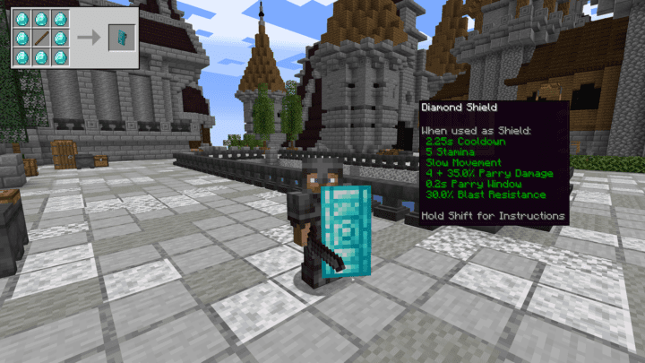
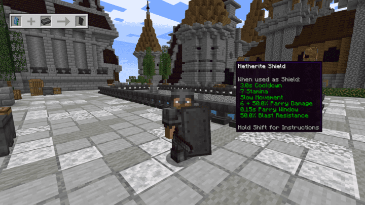
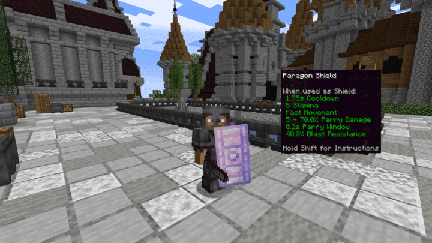
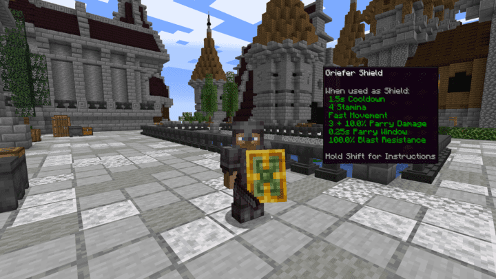
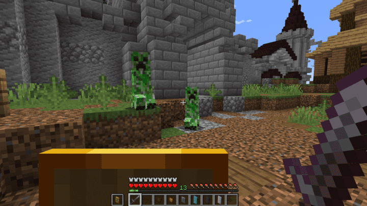
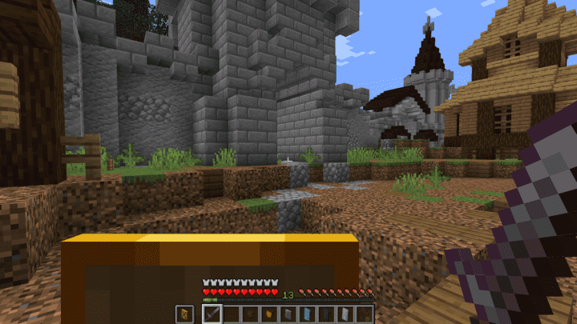

Shield Expansion is a perfect mod to expand the usage and abilities of using shields in Minecraft. This mod aims to improve the combat experience in the game by making defensive strategies more engaging and providing an overall rebalance of what shields can be utilized for during battles. This mod adds several new and unique shields and styles to craft and tailor to your own personal preferences and looks.

The wooden shield is the lowest tier to make and cheapest to craft. It simply requires eight wooden planks of any kind and single stick in the middle. This one is a great starter shield for quick defense and fast movements when you want to parry an attack.

The golden shield is the slight upgrade to the wooden shield in terms of durability but it is a bit more costly requiring eight gold ingots with a stick in the middle. This shield has similar stats to the wooden shield but with a slightly slower cooldown and parry window but it could be an equally viable small shield to have on hand.

The next tiers of the available shields to craft will start to provide a level of blast resistance which can come in handy specifically against creepers and any explosive attacks against you. The iron shield is the first level of these shields. You will need eight iron ingots and a stick to craft it. This shield will provide a 20% blast resistance and falls under the fast movement category of the shields available. It will also provide an additional 20% damage when you use it to parry an attack.
The next step up in these stronger shields is the diamond shield that obviously provides more protection but it is a bit slower than the iron shield because it is slightly larger. It requires eight diamonds and a stick to craft so it is somewhat pricey. But with using this shield you will now have an additional 35% damage when parrying and you will also have a 30% greater resistance to blast attacks. This might be a more powerful shield to choose but it could be more beneficial to use the iron shield if you need to utilize quicker movements during battle.
The last base tier with this mod is the Netherite shield that requires you to craft a diamond shield and place it in a smithing table with a netherite ingot. It is still a slower shield to wield but it will massively improve the diamond shield by providing an additional 50% in parry damage as well as 50% blast resistance. So if you really need protection in the heat of combat then it could be worth it to upgrade your diamond shield to a netherite shield.
There are two additional shields with this mod that you can obtain through creative mode or you would need to install two related mods alongside this one. The Mining Master mod that you can find here will allow you to upgrade your diamond shield to the much more powerful Paragon shield. This shield will turn your diamond or netherite shield into a fast movement shield and offers a whopping 70% additional parry damage as well as 40% blast resistance.
And the other mod is called Savage and Ravage and can be downloaded here. This mod will allow you to craft the Griefer shield, which is a middle sized option, and is also a fast moving upgraded shield. It will only provide an additional 10% towards your parry damage but it offers 100% blast resistance. So if you need ultimate protection against explosive attacks then it may be worthwhile to take advantage of the Griefer shield.
 With all of these new shield options to choose from, you can now benefit from their new capabilities during combat. First of all each one has an off-guard cooldown, which means that every time your shield gets hit then there will be a range of 1-3 seconds of cooldown before you can use it defensively again. This is the time you will need to switch to offensive tactics or work on dodging any additional attacks against you. And then you can bypass the off-guard cooldown by learning how to parry with your shield. If you raise your shield just before an attack hits you then you avoid the cooldown and can then shove or attack in response.